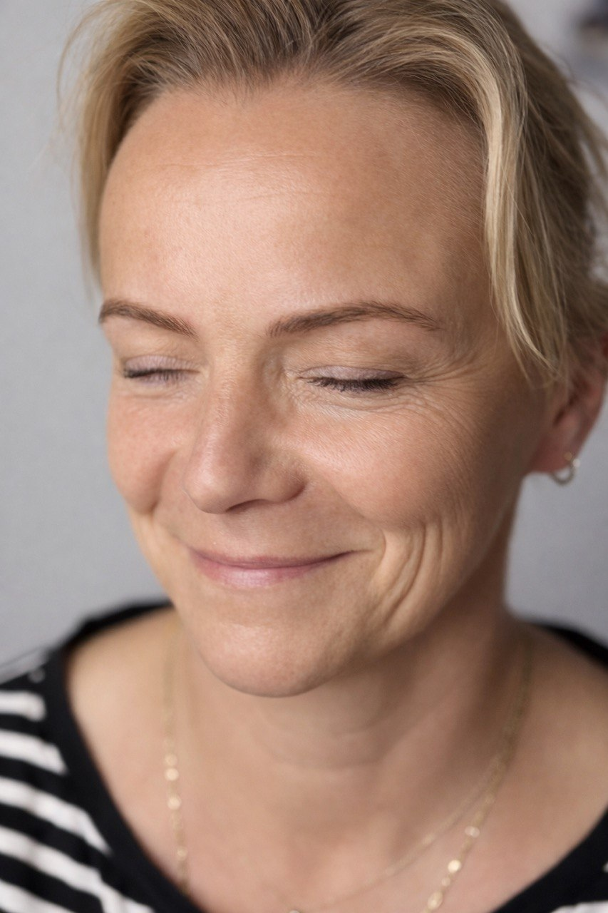
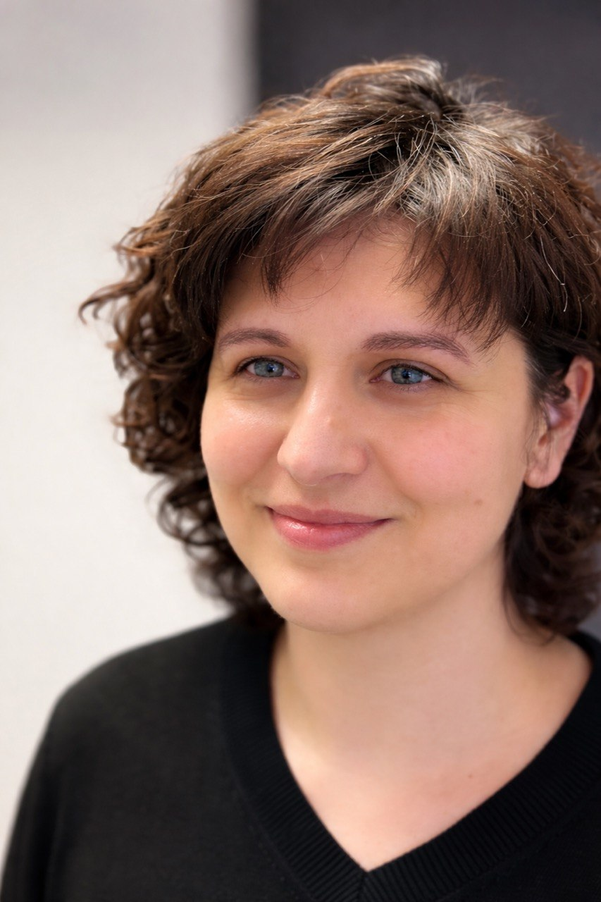
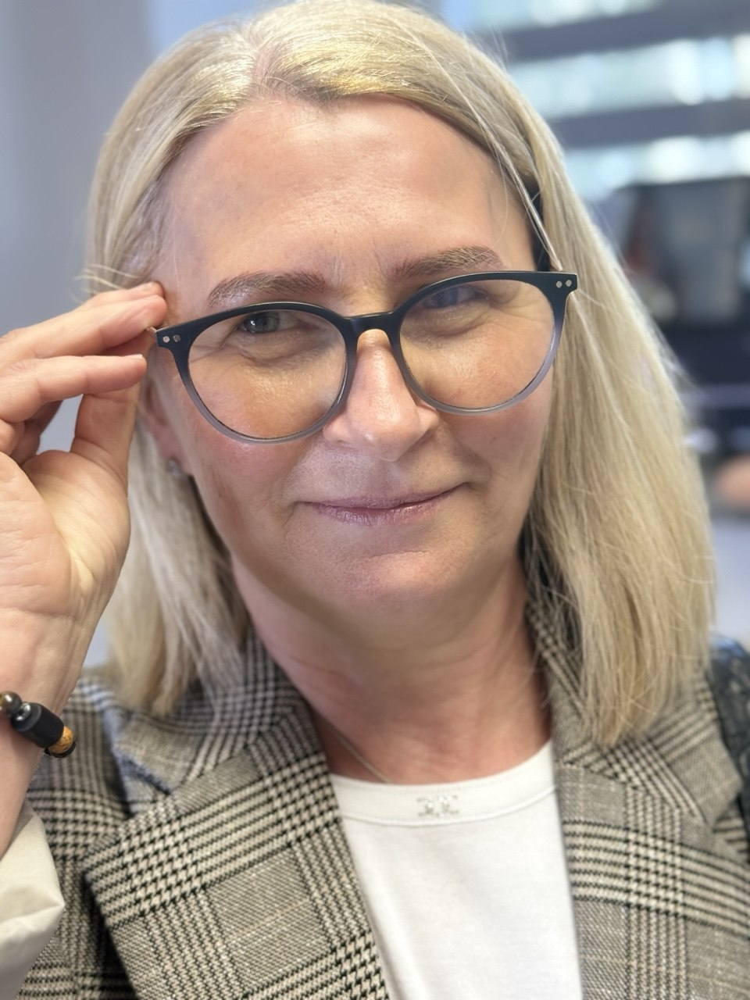
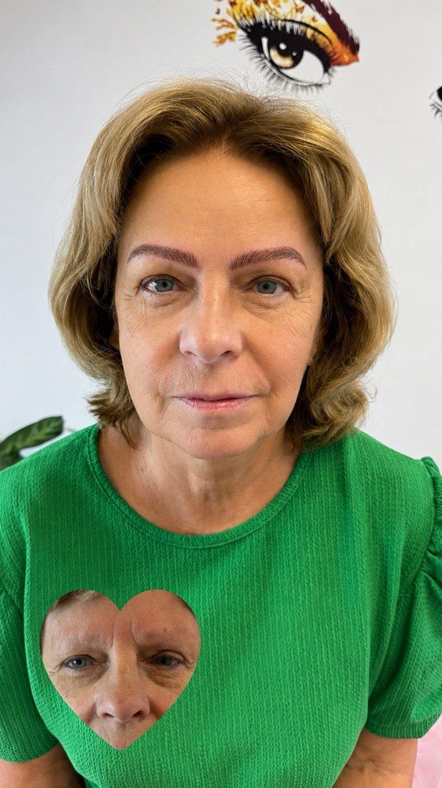
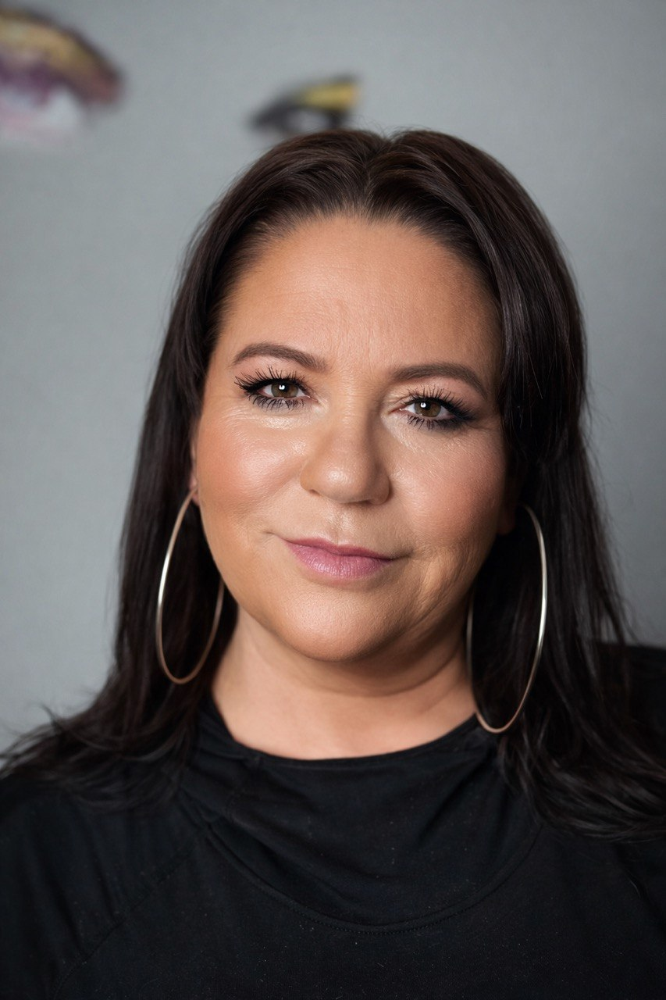
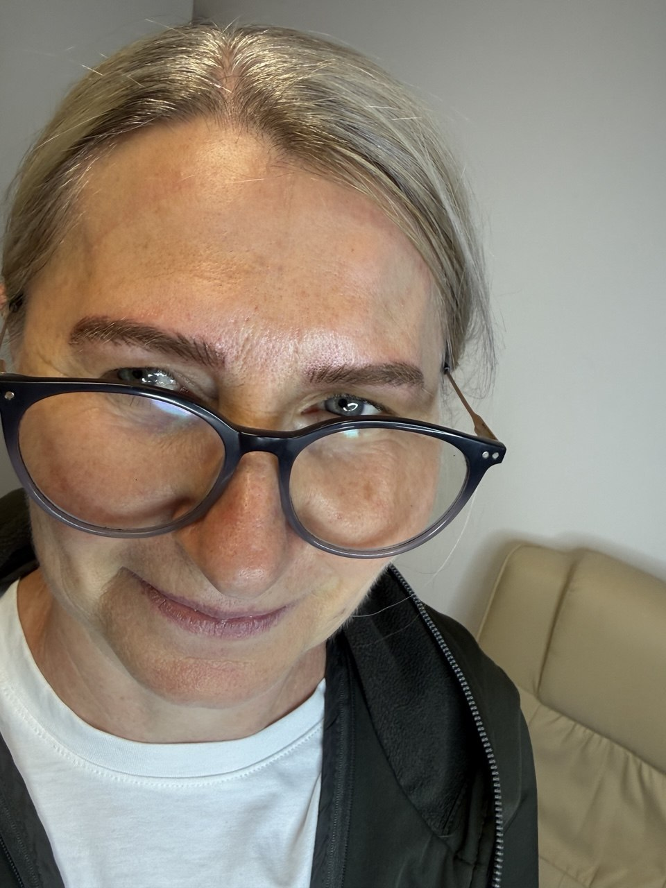
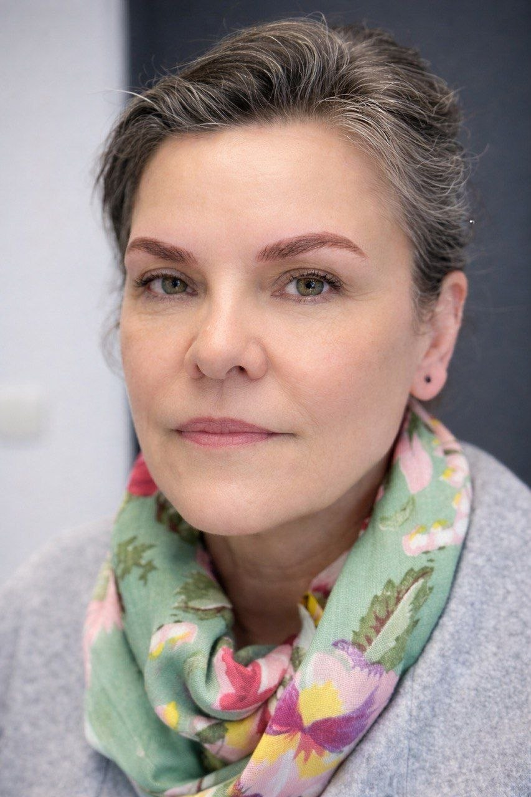
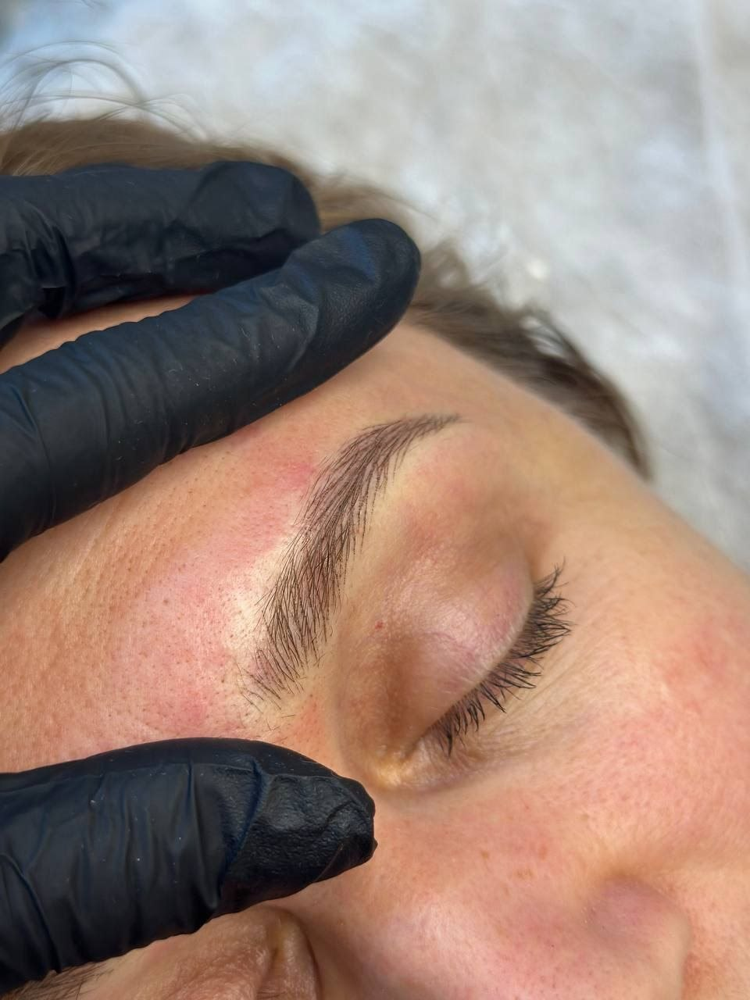

Dla kogo jest technika włoskowa?
Technika włoskowa sprawdzi się, jeśli:
- masz rzadkie lub asymetryczne brwi
- chcesz delikatnie podkreślić naturalny kształt
- zależy Ci na efekcie pojedynczych włosków
- cenisz naturalny wygląd
Marzysz o idealnych brwiach, które wyglądają naturalnie każdego dnia? Technika włoskowa brwi to jedna z najczęściej wybieranych metod makijażu permanentnego brwi w Poznaniu. Dzięki precyzyjnemu odwzorowaniu pojedynczych włosków uzyskujemy subtelny i realistyczny efekt.
W Permanent Make-up Clinic & Nails Studio wykonujemy makijaż permanentny brwi w Poznaniu z wykorzystaniem nowoczesnych pigmentów oraz indywidualnie dobranej techniki. Każdy zabieg poprzedzamy konsultacją i projektem brwi dopasowanym do rysów twarzy.

Technika włoskowa sprawdzi się, jeśli:
Krótkie nagranie pokazujące, jak wygląda wykonanie makijażu permanentnego brwi metodą włoskową.
Naturalne, gęste i równo ułożone brwi metodą włoskową — zobacz przykładowe realizacje.








Oprócz makijażu permanentnego brwi wykonujemy również makijaż permanentny ust w Poznaniu oraz makijaż permanentny oczu w Poznaniu.
Sprawdź nasz cennik makijażu permanentnego w Poznaniu i umów bezpłatną konsultację.
Konsultacja jest zawsze bezpłatna. Odpiszemy w ciągu 24 godzin — podaj preferowane daty, a dopasujemy termin do Twojego kalendarza.
Wolisz zadzwonić? Jesteśmy pod numerem +48 452 370 369, pon–pt 08–20, sob 08–18.
Efekt utrzymuje się zazwyczaj od 1,5 do 3 lat, w zależności od rodzaju skóry oraz pielęgnacji.
Stosujemy znieczulenie miejscowe, dzięki czemu zabieg jest komfortowy.
Około 2–3 godzin wraz z konsultacją i projektem.
Najczęściej po 6–8 tygodniach.